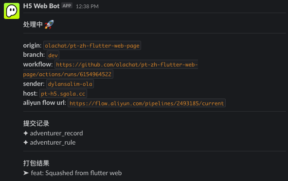
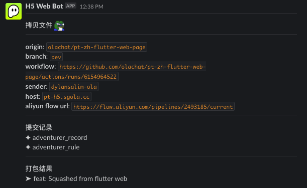
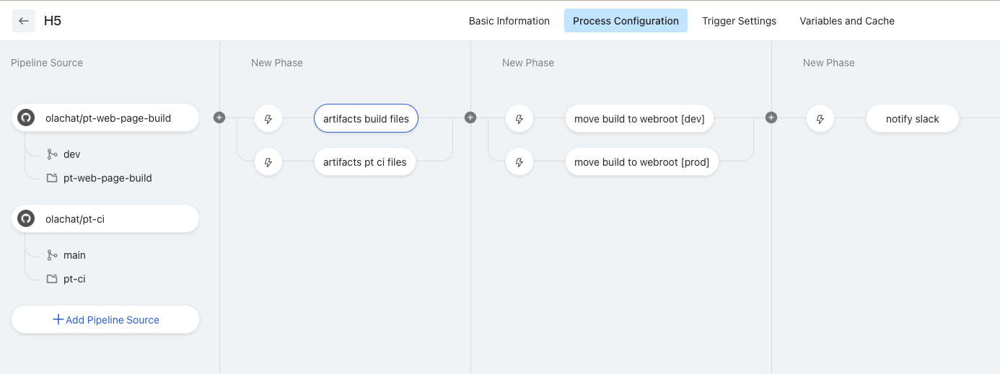

PT Flutter Web自动部署
PT Flutter Web自动部署
PT Flutter Web自动部署
- PT Flutter web新的代码库： https://github.com/olachat/pt-zh-flutter-web-page
- PT Flutter web 打包后的代码库（包含build文件）：https://github.com/olachat/pt-web-page-build
- Github Actions yaml: https://github.com/olachat/pt-zh-flutter-web-page/blob/master/.github/workflows/build.yaml
- Aliyun flow: https://flow.aliyun.com/pipelines/2493185/current
- 新flutter web 域名：
- 部署事件bot: partying-web-bot (可以找 Dylan Salim 石田 要求slack channel权限)
自动部署使用指南：
只需要pr进master或者dev就会自动部署
自动部署flow：
新flutter web的github actions会聆听beta和dev分支，Master 和dev 分支都需要以pr的方式提交代码。

Github actions 的代码请查看 action
如果有新的commit，便会通知partying-web-bot的slack群。Flutter web的打包动作会由github actions去触发，调用我们客户端的打包机器去打包文件。
打包的脚本: https://github.com/olachat/pt-zh-flutter-web-page/blob/master/.github/workflows/scripts/build-prod.sh打包完成后，actions会上载至另一个打包后的代码库, pt-web-page-build (用法和web-page-flutter的代码库相似)。
在上载build文件后， github actions 会触发一个webhook通知云效。

云效在收到请求后，会搬运文件去我们新的pt-h5的机器。
搬运的branch名是通过webhook param传的。(都在github actions里)
阿里云云效: https://flow.aliyun.com/pipelines/2493185/current
发送webhook后，会更新之前的slack信息云效搬运好后，会更新之前的slack信息
- 云效flow config
FAQ
- 云效里有什么功能？为什么使用云效而不是使用
scp拷贝去部署机器？
A: 云效只有拷贝文件和通知slack部署已经完成的功能
此功能也能使用scp完成，scp也会比云效快
我们这次的自动部署功能改用云效是因为安全考量，不把机器ssh token存在github里
PT Flutter Web自动部署
https://dylansalim-ola.github.io/tech-documentation/post/H5部署/H5_flutter_web.html